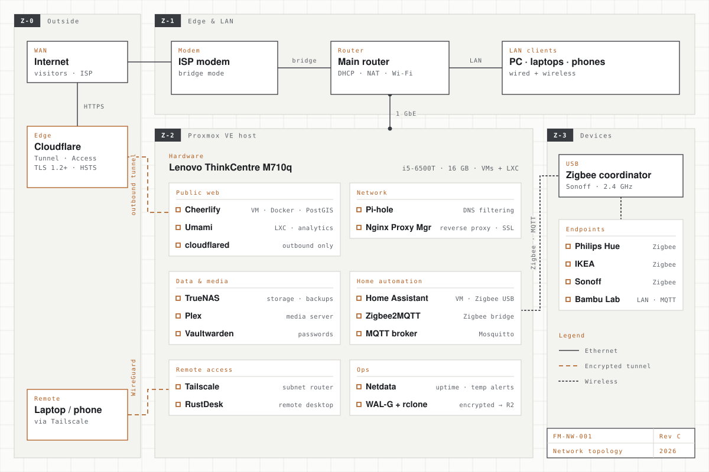
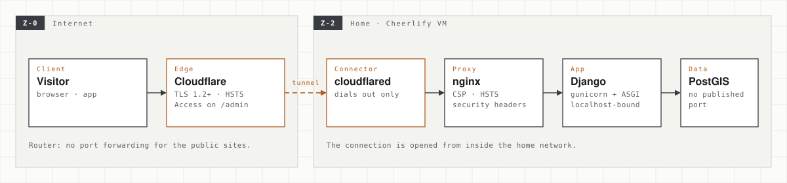
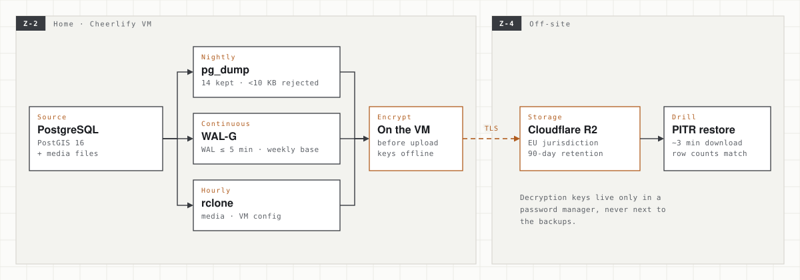

Home Server & Network
It started as a way to stop juggling five smart-home apps. Today one small Proxmox box runs my home automation, storage and media, and it also hosts the production backend of my own product and the analytics for my websites. The public sites are reachable from the internet without a single open port on my router.

Why I built it
The first version solved a home problem. Lights, sensors and plugs from Philips Hue, IKEA and Sonoff each came with their own app and their own cloud. Automations fired late or not at all when a vendor's server had a bad day, and there was no single place to see what the house was doing. I wanted one local control plane that keeps working when the internet doesn't.
A hypervisor was the obvious foundation. With Proxmox VE, each job gets its own virtual machine or container, can be snapshotted before an upgrade, and can be restored without touching the others. Home Assistant, storage, DNS filtering and remote access all moved onto one low-power Lenovo ThinkCentre Tiny.
The second chapter came in 2026. When I started building Cheerlify, I needed a real, internet-facing environment for betas and field tests without paying for cloud servers from day one. The home server became a small hosting platform, which meant it now had to be treated like production: hardened, backed up and monitored.
The architecture
The diagram above is organised into four zones. Each boundary is also a trust boundary.
- Z-0 · Outside — the internet, Cloudflare's edge and my own devices when I'm away. Nothing here can open a connection into the house directly.
- Z-1 · Edge & LAN — the ISP modem runs in bridge mode, so a single router of my own handles DHCP, NAT and Wi-Fi for every client.
- Z-2 · Proxmox host — a ThinkCentre Tiny (Intel i5-6500T, 16 GB RAM) running VMs for the heavier workloads (TrueNAS, Home Assistant, the Cheerlify stack) and lightweight LXC containers for single-purpose services (Pi-hole, Tailscale, Nginx Proxy Manager, RustDesk, Umami).
- Z-3 · Devices — the Zigbee mesh and the 3D printer. A Sonoff Zigbee coordinator is passed through over USB directly to the Home Assistant VM, so the radio belongs to exactly one system.
The split between VMs and containers is deliberate. Anything that needs its own kernel, direct hardware access or a full OS image gets a VM. Anything that is one daemon and a config file gets an LXC container, which boots in seconds and uses a fraction of the memory.
Hosting my own products
Cheerlify production. A dedicated Debian VM (4 vCPU, 6 GB) runs the whole backend as a Docker Compose stack: PostgreSQL with PostGIS, the Django API under gunicorn, a separate ASGI service for live updates, a scheduler, an nginx front end and the backup jobs. It serves cheerlify.com and the admin panel.
Shared analytics. A self-hosted, cookie-less Umami instance runs in its own LXC container with its own tunnel. It collects the traffic and campaign data for both cheerlify.com and vanoor.app. The data never goes to a third-party analytics vendor.
Knowing what doesn't belong at home. Static sites such as this portfolio and the Vanoor landing page are served from external static hosting instead. They need global caching, not a database, and they shouldn't go down when my house loses power.

Security, layer by layer
A home connection is a hostile place to publish from. So there is no single wall. Each layer assumes the one in front of it might fail.
| Layer | What protects it |
|---|---|
| Edge | All public traffic enters through Cloudflare: TLS 1.2 minimum, HSTS and nosniff, and the public hostnames point to Cloudflare, never to my home IP. |
| Ingress | A Cloudflare Tunnel connector on the VM dials out to Cloudflare. There is no port forwarding on the router for the public sites, so a port scan of my home IP finds nothing to attack. |
| Access | Admin surfaces sit behind Cloudflare Access (one-time email codes for allowed users only), plus TOTP two-factor authentication and re-authentication for sensitive actions inside the app. During the private beta the whole site was behind Access, and switching that back on is the documented emergency response. |
| Origin | nginx adds a Content-Security-Policy, HSTS, X-Frame-Options, Referrer-Policy and Permissions-Policy. Application ports listen on localhost only, and the database has no published port at all. |
| Host | Key-only SSH with forwarding disabled. An nftables firewall drops incoming traffic by default and allows administration only from the home LAN, with an automatic rollback so a bad rule can't lock me out. Secrets live in permission-restricted files outside Git. |
| Remote admin | When I'm away I reach the LAN through Tailscale (WireGuard) as a subnet router, not through an open SSH or dashboard port. RustDesk covers remote desktop. |
| Data | Backups are encrypted on the VM before they leave the house. The decryption keys are kept only in a password manager, never next to the backups. |
In September 2026, before opening Cheerlify to the public, I ran a security audit of my own stack. It found services listening more widely than they needed to and a few defaults that were fine for development but not for production. All of them were fixed, and the hardening is now a repeatable script instead of a list of manual steps.
Backups that were actually restored
A backup you have never restored is a hope, not a backup. The database is protected three ways. A nightly pg_dump keeps 14 copies and rejects suspiciously small dumps. WAL-G archives the write-ahead log continuously, at most every five minutes, with a weekly base backup, which makes point-in-time recovery possible. An hourly rclone job copies uploaded media and the VM configuration.
Everything is encrypted locally and stored in a Cloudflare R2 bucket in the EU jurisdiction. On 23 September 2026 I rehearsed a point-in-time restore: the download took about three minutes, and the row counts matched the live database. Rebuilding a whole VM from scratch hasn't been rehearsed yet, and it's the next drill on the list.

Monitoring & incidents
Netdata on the Proxmox host watches the machine and sends email alerts. It runs HTTP checks against Home Assistant, TrueNAS, Pi-hole, the proxy and the public sites, and raises an alarm if the CPU passes 75 °C. An external uptime monitor watches the public endpoints from outside, and application errors go to Sentry.
Most of that monitoring exists because something went wrong first. The incident log:
| Incident | What happened | Fix |
|---|---|---|
| Silent outage | After a host reboot, the Cheerlify VM stayed powered off for four days and nobody noticed. | Start-on-boot for every production guest, plus an external uptime monitor that emails me. |
| 502 after reboot | The VM came back, but the database container had no restart policy, so the site returned 502 errors. | Restart policies on every service, and Docker live-restore on the host. |
| Lost SSH | The VM's DHCP address changed and my SSH config broke. The public site stayed up, because the tunnel dials out and doesn't care about the local IP. | A static DHCP lease on the router, and resolving the address through the Proxmox guest agent. |
| Database stalls | On the spinning HDD, each commit's fsync took 20–30 ms. Under memory pressure, commits stalled for over 30 seconds. | Batched writes and relaxed synchronous commit for non-critical data. An NVMe SSD is the real fix. |
| Worker exhaustion | The tunnel pointed straight at Django and bypassed nginx, so long-lived live-update connections used up the API workers. | All hostnames now route through nginx, which sends live traffic to the dedicated ASGI service. |
The smart home layer
The original purpose still runs every day. Home Assistant is the single control plane for the Philips Hue, IKEA and Sonoff devices on the Zigbee mesh and for the Bambu Lab printer over the local network. Device state and automation logic live in one place, and they keep working when the internet is down.
- Home Assistant — the automation brain, with the Zigbee coordinator passed through over USB.
- Zigbee2MQTT + MQTT — local device communication without any vendor cloud in the loop.
- Pi-hole — network-wide ad blocking and DNS filtering for every device in the house.
- Nginx Proxy Manager — reverse proxies, SSL certificates and local DNS names for the internal services.
- TrueNAS — file shares, backups and central storage for projects and media.
- Plex — streaming my own media library to every screen.
- Vaultwarden — self-hosted password manager for credentials and internal secrets.
Limits & what's next
I try to be honest about what this is. It's one host, one hard drive, one internet connection and no UPS. That's a good fit for development, betas and field tests, but it isn't a high-availability platform, and my product docs say so. The architecture is built so that moving the Cheerlify stack to a cloud VM is a restore from backup, not a rewrite.
Next on the list: an NVMe SSD for the database, a UPS, a heartbeat that alerts me if a backup job silently stops, and a full "rebuild the VM from nothing" drill.
What I learned. Running your own server teaches you what managed platforms hide. Reboots, IP changes, disk latency and restart policies all turned into real outages before they turned into checklists. Every layer on this page exists because I either measured a problem or lived through one.